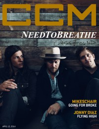

CCM Digital, 15 Apr 2014
| Cover |
|---|
|  |
 Online Exclusively Online Exclusively |
| Writers in this Issue |
| Argyrakis, Andy Aspinwall, Grace S. Conner, Matt Greer, Andrew Hensley, Casey Lusk, Caroline Mohr, Keith Saraco, Bert |
NeedToBreathe
Cover Feature:- "Oasis Found: NeedToBreathe Emerges From the Wasteland to the Promised Land" by Caroline Lusk
- "Going For Broke" by Caroline Lusk
- "Flying High" by Caroline Lusk
- "Taking the Time to Fantasize" by Matt Conner
- "Casting Shadows" by Matt Conner
- "Through the Fire" by Casey Hensley
- "Taking Home on the Road" by Caroline Lusk
- "Getting Started, Part 2 of 3" by Keith Mohr
- Francesca Battistelli - If We're Honest by Grace S. Aspinwall
- Peter Furler - Sun and Shield by Andy Argyrakis
- The Gaither Vocal Band - Hymns by Matt Conner
- various artists - Endless: Songs of Eternity by Bert Saraco
- NeedToBreathe - Rivers in the Wasteland by Matt Conner
- Owen Thomas - Languages {Or: Get Dark and Find Yourself} by Andy Argyrakis
- John Mark McMillan - Borderland by Andy Argyrakis
- Bethany Bordeaux - Songs from Along the Way: A Live Recording by Andrew Greer
- The Winans - Family Tree by Andrew Greer
- Norman Hutchins - Hosanna by Andrew Greer
- Iona - Edge of the World: Live In Europe by Andy Argyrakis
- Brett Detar - Too Free To Live by Andy Argyrakis
- "The Roadshow Tour, Chicago Theatre, Chicago, IL" by Andy Argyrakis
- "Heaven Is For Real" by Caroline LuskHeaven Is For Real (movie)
© 2011 CMnexus. Last updated April 2021. Contact: editor -AT- cmnexus -DØT- org About